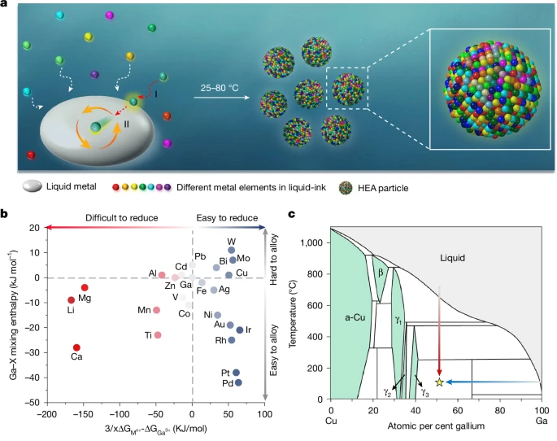
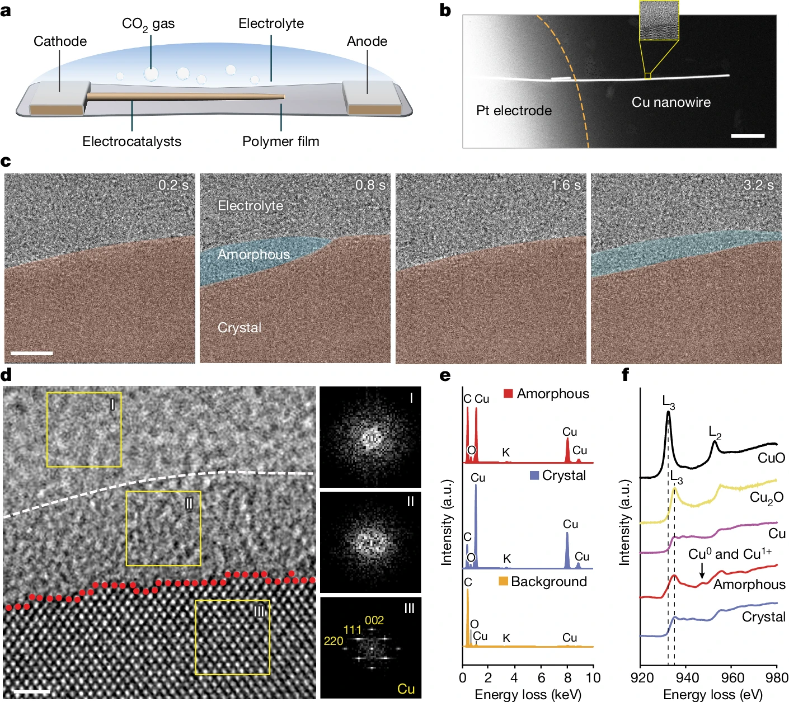

Qiubo Zhang (First Author), Haimei Zheng*, et al.
Nature, 2025.
This breakthrough study introduces a novel isothermal solidification method for synthesizing high-entropy alloys, overcoming traditional phase separation challenges.

Zhang, Q.*, Song, Z., Sun, X. et al.
Nature, 2024.
Utilizes advanced liquid-cell TEM to reveal the atomic dynamics at electrified solid-liquid interfaces, providing direct visualization of electrochemical processes at the atomic scale.
Loading publications...